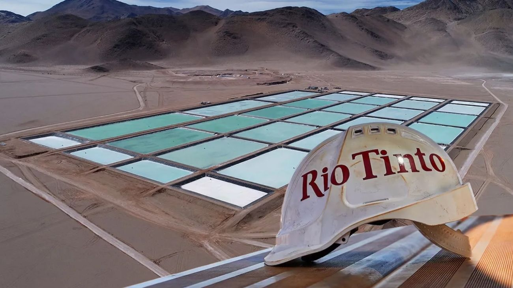

Rio Tinto ingresa al RIGI con un proyecto de litio en Catamarca por US$251 millones: qué implica para Argentina
El Gobierno nacional aprobó el ingreso al Régimen de Incentivo para Grandes Inversiones (RIGI) de un proyecto de litio de la minera multinacional Rio Tinto en la provincia de Catamarca, por un monto de US$251 millones. La aprobación consolida a Argentina como destino clave para la minería de litio a nivel global y suma un nuevo actor de peso al ecosistema de inversiones del país.

Argentina sigue atrayendo inversiones mineras de escala mundial. El Gobierno nacional aprobó el ingreso al RIGI —el Régimen de Incentivo para Grandes Inversiones creado durante la gestión de Milei— de un proyecto de litio presentado por Rio Tinto, una de las mineras más grandes del mundo, con sede en el Reino Unido y cotización en las bolsas de Londres, Nueva York y Sydney. El proyecto, ubicado en la provincia de Catamarca, contempla una inversión de US$251 millones y se convierte en uno de los primeros grandes proyectos de litio en acceder formalmente a este régimen de beneficios impositivos y cambiarios diseñado para atraer capital privado de largo plazo a sectores estratégicos de la economía argentina.
Para entender la importancia del litio en el contexto actual, basta con saber que este mineral es el insumo clave para la fabricación de baterías de vehículos eléctricos, dispositivos móviles y sistemas de almacenamiento de energía renovable. En un mundo que acelera su transición energética, la demanda de litio crece de manera sostenida y los países que tienen reservas probadas —como Argentina, que forma parte del llamado "Triángulo del Litio" junto a Chile y Bolivia— están en una posición privilegiada para capturar esa demanda. Catamarca, en particular, es una de las provincias con mayor potencial litífero del país, y la llegada de Rio Tinto con un proyecto formal y aprobado bajo el RIGI es una señal de que el interés global en el litio argentino es concreto y se está materializando en inversiones reales.
El RIGI le otorga a Rio Tinto un paquete de beneficios diseñados para dar certeza y previsibilidad a inversiones de largo plazo: estabilidad fiscal e impositiva por 30 años, acceso libre al mercado de cambios para repatriar utilidades, reducción de aranceles de importación para bienes de capital y un marco regulatorio simplificado. A cambio, el proyecto se compromete a generar empleo local, transferir tecnología y producir divisas genuinas a través de las exportaciones. Para Catamarca, una provincia cuya economía depende históricamente de la minería, la aprobación de este proyecto representa una oportunidad concreta de desarrollo productivo y generación de trabajo calificado en los próximos años.
La aprobación del proyecto de Rio Tinto se suma a una seguidilla de inversiones que están redefiniendo el perfil productivo de Argentina. En pocas semanas, el país vio cómo Pampa Energía solicitaba el RIGI para un proyecto petrolero de US$4.500 millones en Vaca Muerta, TGS presentaba un plan de US$3.000 millones en líquidos de gas natural, y Mercado Libre anunciaba una inversión de US$3.400 millones en tecnología y logística. A ese pelotón se suma ahora Rio Tinto en el sector minero, completando un cuadro donde los sectores de energía, tecnología y recursos naturales están recibiendo simultáneamente compromisos de inversión históricos. Para Argentina, que necesita dólares y empleo para consolidar su recuperación económica, cada aprobación de este tipo es un paso más en la dirección correcta.